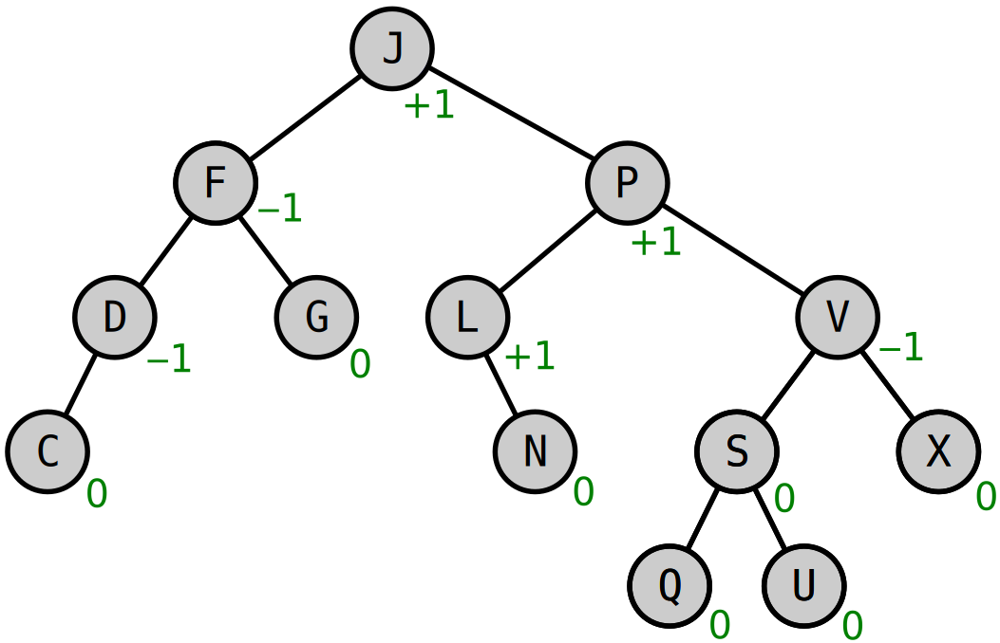

AVL Tree
The AVL Tree is a self-balancing binary search tree in which balancing operations take place based on the difference of height between the left and right subtrees. Such operations may occur during the insertion and deletion of keys performing recursive rotate operations to ensue that the difference between the heights of the left and right substrees is restricted to $[-1, 1]$.

Example of AVL Tree with balance factors shown in green.
AVL Trees are often compared with Red–Black Trees because both take $O(\log n)$ time for the basic operations. However, for lookup-intensive applications, AVL Trees are faster than Red–Black Trees because they are more strictly balanced. Similar to Red–Black Trees, AVL Trees are height-balanced.
Computational complexity for common operations using an AVL Tree
| Operation | Average Case | Worst Case |
|---|---|---|
| Space | $\Theta(n)$ | $O(n)$ |
| Search | $\Theta(\log n)$ | $O(\log n)$ |
| Insertion | $\Theta(\log n)$ | $O(\log n)$ |
| Deletion | $\Theta(\log n)$ | $O(\log n)$ |
Constructors
DataStructures.AVLTree — TypeAVLTree{T}Construct new AVLTree with keys of type T.
Example
julia> tree = AVLTree{Int64}()
AVLTree{Int64}(nothing, 0)Usage
The AVLTree type implements the following methods:
delete!(tree::AVLTree{K}, k::K) where Kin(key, tree::AVLTree)getindex(tree::AVLTree{K}, ind::Integer) where Khaskey(tree::AVLTree{K}, k::K) where Kpush!(tree::AVLTree{K}, k) where Ksorted_rank(tree::AVLTree{K}, key::K) where K
Base.delete! — Methoddelete!(tree::AVLTree{K}, k::K) where KDelete key k from tree AVL tree.
Base.getindex — Methodgetindex(tree::AVLTree{K}, ind::Integer) where KConsidering the elements of tree sorted, returns the ind-th element in tree. Search operation is performed in $O(\log n)$ time complexity.
Examples
julia> tree = AVLTree{Int}()
AVLTree{Int64}(nothing, 0)
julia> for k in 1:2:20
push!(tree, k)
end
julia> tree[4]
7
julia> tree[8]
15Base.haskey — Methodhaskey(tree::AVLTree{K}, k::K) where KVerify if AVL tree tree contains the key k. Analogous to in(key, tree::AVLTree).
Base.in — Methodin(key, tree::AVLTree)In infix operator for key and tree types. Analogous to haskey(tree::AVLTree{K}, k::K) where K.
Base.length — Methodlength(tree::AVLTree)Return number of elements in AVL tree tree.
Base.push! — Methodpush!(tree::AVLTree{K}, key) where KInsert key in AVL tree tree.
DataStructures.left_rotate — Methodleft_rotate(node_x::AVLTreeNode)Performs a left-rotation on node_x, updates height of the nodes, and returns the rotated node.
DataStructures.minimum_node — Methodminimum_node(tree::AVLTree, node::AVLTreeNode)Returns the AVLTreeNode with minimum value in subtree of node.
DataStructures.right_rotate — Methodright_rotate(node_x::AVLTreeNode)Performs a right-rotation on node_x, updates height of the nodes, and returns the rotated node.
DataStructures.sorted_rank — Methodsorted_rank(tree::AVLTree{K}, key::K) where KReturns the rank of key present in the tree, if it present. A KeyError is thrown if key is not present.
Examples
julia> tree = AVLTree{Int}();
julia> for k in 1:2:20
push!(tree, k)
end
julia> sorted_rank(tree, 17)
9